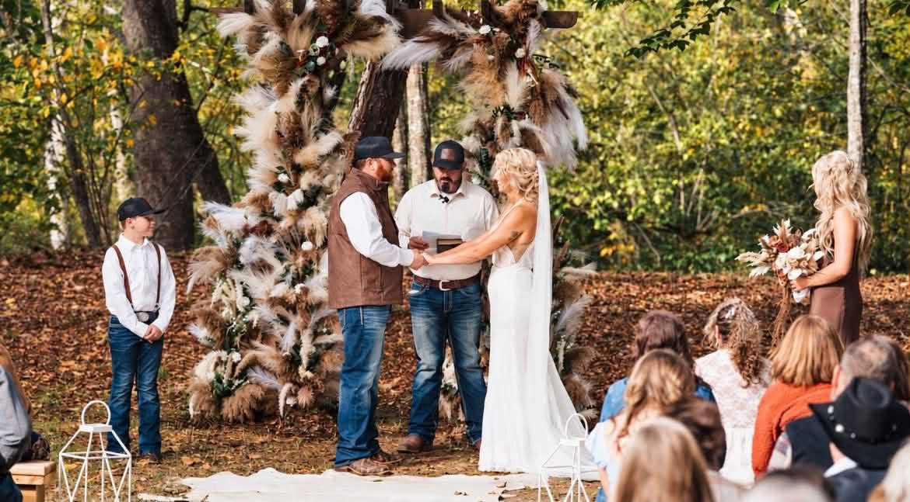
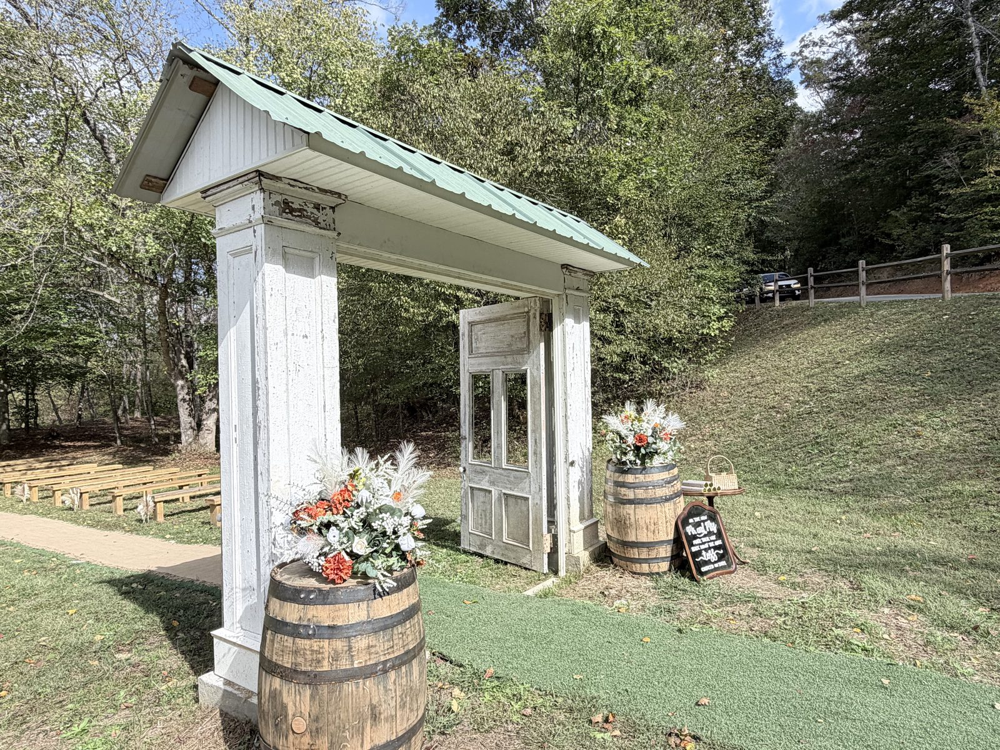

A Thank You to Casey: Decor Left with Love for Future Brides
Casey and Jacob’s October wedding left more than beautiful memories at Riverside — she left her wedding signs and handmade flowers so the next brides can use them too.

Dear Casey,
Some gifts show up wrapped in paper. Yours showed up in the barn, along the aisle, and in every sweet detail you poured into your day with Jacob — and then you left them here for the couples who come after you.
When you said you wanted other brides to use your wedding signs and handmade flowers, it stopped us in our tracks. That kind of generosity isn’t something you can order or put on a package list. It’s a bride thinking of women she may never meet, and deciding their day should feel a little more special because of hers.

We still smile when we walk past those pieces. Your signs welcome people the way you did. Your handmade flowers carry the care you put into every detail. Future Riverside brides won’t just decorate with pretty things — they’ll decorate with a story of kindness that started on your wedding day.
Casey, thank you. From Penny and me, from every couple who will borrow a sign or tuck one of your flowers into their setup, and from Riverside itself — thank you for leaving beauty behind on purpose.
With love, Paula
P.S. If you’re touring Riverside and wonder about the signs and flowers around the barn, ask us. We’ll gladly tell you Casey’s story.